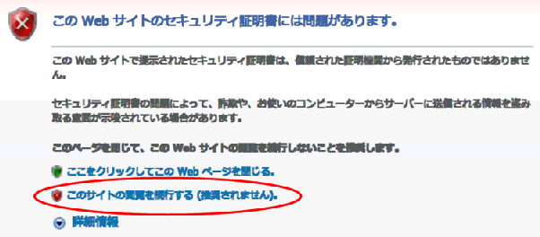
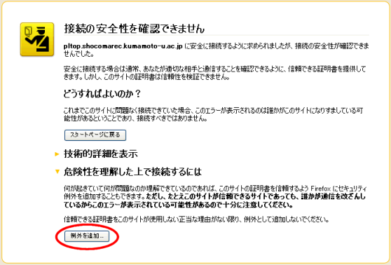
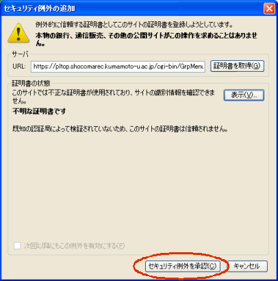

SSL(Secure Socket Layer)化で登録データの送受信は暗号化 (インターネット上の盗聴などによる登録情報の漏洩の危険性が低下します。) されますが、現在のところWebサイトの証明を第3者機関で証明してもらうための 手続きをとっていません。 (オンラインで金銭の授受を行いませんので、その必要はないと考えています。)
そのため、オンライン登録サイトに接続すると次のような「警告」がでますが、 一時的でも次のようにバイパスしていただく必要があります。


